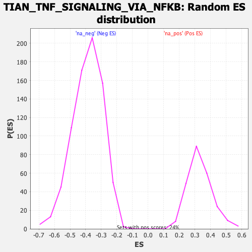

| | | Dataset | DE_genes2 |
| Phenotype | NoPhenotypeAvailable |
| Upregulated in class | na_pos |
| GeneSet | TIAN_TNF_SIGNALING_VIA_NFKB |
| Enrichment Score (ES) | 0.83317745 |
| Normalized Enrichment Score (NES) | 2.5300982 |
| Nominal p-value | 0.0 |
| FDR q-value | 0.0 |
| FWER p-Value | 0.0 |
Table: GSEA Results Summary
 Fig 1: Enrichment plot: TIAN_TNF_SIGNALING_VIA_NFKB
Fig 1: Enrichment plot: TIAN_TNF_SIGNALING_VIA_NFKB
Profile of the Running ES Score & Positions of GeneSet Members on the Rank Ordered List
| PROBE | GENE SYMBOL | GENE_TITLE | RANK IN GENE LIST | RANK METRIC SCORE | RUNNING ES | CORE ENRICHMENT | | 1 | CXCL3 | | | 1 | 21.432 | 0.2193 | Yes |
| 2 | TNIP1 | | | 3 | 17.406 | 0.3973 | Yes |
| 3 | NFKBIA | | | 20 | 10.048 | 0.4992 | Yes |
| 4 | NFKBIE | | | 59 | 7.074 | 0.5692 | Yes |
| 5 | IRF1 | | | 149 | 5.467 | 0.6198 | Yes |
| 6 | RELB | | | 421 | 3.919 | 0.6435 | Yes |
| 7 | TNFAIP3 | | | 475 | 3.759 | 0.6787 | Yes |
| 8 | GFPT2 | | | 567 | 3.514 | 0.7092 | Yes |
| 9 | CXCL2 | | | 773 | 3.082 | 0.7283 | Yes |
| 10 | CD83 | | | 1067 | 2.643 | 0.7376 | Yes |
| 11 | NFKB2 | | | 1108 | 2.595 | 0.7617 | Yes |
| 12 | CXCL1 | | | 1270 | 2.390 | 0.7764 | Yes |
| 13 | CXCL8 | | | 1367 | 2.297 | 0.7941 | Yes |
| 14 | PTGS2 | | | 1604 | 2.084 | 0.8011 | Yes |
| 15 | CCL20 | | | 1950 | 1.792 | 0.7986 | Yes |
| 16 | SDC4 | | | 1965 | 1.784 | 0.8160 | Yes |
| 17 | GCH1 | | | 2107 | 1.677 | 0.8246 | Yes |
| 18 | TNFAIP2 | | | 2236 | 1.597 | 0.8332 | Yes |
| 19 | TRAF1 | | | 3559 | 0.986 | 0.7632 | No |
| 20 | PLK2 | | | 5464 | 0.458 | 0.6525 | No |
| 21 | NFKB1 | | | 6140 | 0.317 | 0.6149 | No |
| 22 | REL | | | 8803 | -0.152 | 0.4552 | No |
| 23 | ZFP36 | | | 9238 | -0.251 | 0.4314 | No |
| 24 | IL6 | | | 9946 | -0.445 | 0.3932 | No |
| 25 | TNFRSF9 | | | 10309 | -0.557 | 0.3769 | No |
Table: GSEA details [plain text format]

Fig 2: TIAN_TNF_SIGNALING_VIA_NFKB: Random ES distribution
Gene set null distribution of ES for TIAN_TNF_SIGNALING_VIA_NFKB